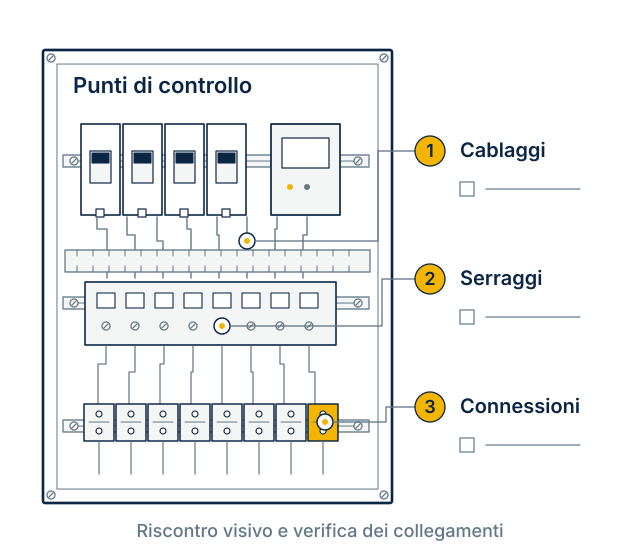

Modifiche e verifiche
su quadri elettrici.
Una nuova utenza, un componente da sostituire, uno schema da aggiornare. Valutiamo il quadro e definiamo gli interventi, le verifiche e i documenti necessari.

Schema illustrativo, non una configurazione di fornitura.
Da cosa parte
l’intervento?
La richiesta deve descrivere cosa è cambiato o quale problema occorre approfondire.
- Ampliamento
- Nuove utenze, partenze o circuiti da integrare nel quadro esistente.
- Aggiornamento
- Sostituzione di componenti o modifica delle funzioni, dopo averne valutato la compatibilità.
- Verifica
- Controlli da concordare prima della consegna, dopo una modifica o per approfondire anomalie segnalate.
- Documentazione
- Confronto tra quadro e schemi disponibili; rilievi e aggiornamenti previsti dall’incarico.
Intervento e documenti,
nella stessa offerta.
Prima di iniziare, definiamo cosa modificare, cosa verificare e quali informazioni restituire.
Se il materiale disponibile non basta, si valuta un rilievo o un sopralluogo.
- Elenco delle attività e dei componenti interessati.
- Modifiche, sostituzioni e identificazione dei collegamenti.
- Controlli previsti per l’intervento concordato.
- Riepilogo delle lavorazioni e degli esiti delle verifiche.
- Aggiornamenti agli schemi e altri documenti richiesti.
Descrivi il quadro
e cosa deve cambiare.
Parti dai documenti esistenti e dalle informazioni sull’impianto. Indica anche eventuali vincoli di accesso o fermo macchina.
- Schema disponibile e foto già in tuo possesso
- Descrizione del problema o della modifica richiesta
- Componenti o nuove utenze interessati
- Località, disponibilità dell’impianto e tempi desiderati
Le prime
informazioni.
Lo schema elettrico manca o non è aggiornato.
Segnalalo nella richiesta. Le fotografie e una descrizione dell’impianto aiutano a impostare la prima valutazione; gli eventuali rilievi si concordano separatamente.
Posso richiedere solo una verifica?
Sì. Indica l’obiettivo del controllo e il motivo della richiesta, per esempio una modifica appena eseguita o un’anomalia riscontrata.
Sapete già se conviene modificare o sostituire il quadro?
La scelta richiede una valutazione dello stato del quadro, delle nuove esigenze e dei vincoli dell’impianto. Il preventivo viene definito dopo aver raccolto le informazioni necessarie.
Il progetto prevede un quadro nuovo?
Scopri la realizzazione quadri